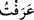

uygundur. Çünkü Allah Teâlâ: “Dini yalnız kendine has kılarak Allah’a kulluk
etmeleri emrolundu.” (el-Beyyine, 98/5) buyuruyor. İhlâs ise, bir işi yalnız ibâdet ve
itâat olduğu için yapmak. Ona başka amaç ve gâyeler karıştırmamaktır.
Arafât’tan akın ettiğinizde, yâni Arafât vakfesini tamamlayıp güneşin batmasıyla
birlikte kalabalık gruplar hâlinde oradan çıktığınızda el-Meş’aru’l-Haram yanında
telbiye, tehlil, tesbih, hamd, senâ ve duâlarla Allah’ı zikredin.
et-Teysîr’de şöyle gelmiştir: Âyetteki ifâde gruplar hâlinde gidip gelen kalabalığın
hareketidir. Arafât vakfeye mahsûs mekânın adıdır. Kelime çoğul olmakla birlikte
gerçek çoğul anlamında değildir. Harflerindeki fazlalık, mânâya kuvvet vermek içindir.
Çünkü Arafât peygamberler tarafından bilinen, tanınan bir yerdir.
Rivâyete göre Cebrâîl, Arafât’ı İbrâhîm’e özellikleriyle anlatmış ve İbrâhîm de
Arafât’ı görünce hemen tanımıştır. Bu yüzden bu mekâna “Arafât” denilmiştir.
Bir başka görüşe göre Cebrâîl, İbrâhîm’e hac menasikinin icrâ edildiği yerleri
gezdiriyor ve ona her gösterdiği yerin ardından: “Burayı tanıdın mı?” (
)” diyordu.
O da o yeri görünce hemen “tanıdım, bildim” (
) diyordu. Bu yüzden buraya
“Arafât” denilmişti.
Bir başka rivâyette ise buraya “Arafât” denilmesinin sebebi şuydu: Âdem ve Havvâ
cennetten yeryüzüne indirildiklerinde Âdem, Hind diyarına, Havvâ da Cidde’ye
bırakılmıştı. Her ikisi birbirini aramaya koyuldular. Nihâyet Arefe gününde Arafât’ta
buluşarak birbirlerini bilip tanıdılar. Bu konuda tefsirlerde başka rivâyetler de vardır.
Bu âyette, Arafât vakfesinin farz oluşuna delîl vardır. Çünkü âyette “ifâza” “sel gibi
akıp gitme” emredilmektedir. İfâzanın meydana gelmesi o mekânda bulunmaya ve
vakfeye durmaya bağlıdır. Bu sebebten ifâza ancak vakfeyle tamamlanabileceğinden
vakfe farzdır.
el-Meş’aru’l-Haram, Kuzeh dağındaki Mîkâde üzerinde imamın vakfe yaptığı yerdir.
el-Muğrib isimli eserde, Mîkâde Kuzah’ın üzerinde bulunan Meş’ar-i Haram yeridir,
denilir. Câhiliyye döneminde Araplar Mîkâde’nin üzerinde ateş yakarlardı. Zikir ve
vakfenin Meş’ar-i Haram’la sınırlanması, Kuzah dağına yakın bölgede yapılan
Müzdelife vakfesinin diğer bölgelerde yapılanlardan daha fazîletli olduğuna dikkat
çekmek içindir. Ancak vakfenin Meş’ar-i Harâm civarında olmasına âid hüküm,
Müzdelife’nin diğer bölgelerinde yapılan vakfenin geçersiz olduğu anlamına gelmez.
Nitekim Arafât’ın her tarafı vakfe yeri olmakla birlikte Cebel-i Rahme yanında
yapılan vakfe diğerlerinden daha efdal ve evlâdır.
el-Meş’ar, ibâdet için alâmet, demektir. “Şeâir”, şiâr kökünden alâmetler demektir.
Meş’ar’ın “Haram” kelimesiyle mevsûf olması hürmet ve değerinden dolayıdır.
Buralarda yasak olan şeyler işlenemez demektir.
“O’nu size gösterdiği şekilde anın”, yâni size nasıl zikretmesini emrettiyse öyle
zikredin. O’nu “zikr-i kesîr” ile yalvararak, O’ndan korkarak rahmetinden ümidvâr
olarak, gazabından ürkerek celâlini ve cemâlini müşâhede ederek anın. Nitekim
Peygamberimiz (s.a.)’in “Allah’ı görüyormuşcasına kulluk” diye târif ettiği “ihsan”